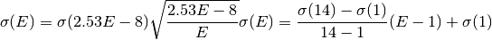

Cross Section Data Sources – pyne.xs.data_source¶
Cross section library data source interfaces.
- class pyne.xs.data_source.DataSource(src_phi_g=None, dst_group_struct=None, **kwargs)[source]¶
Base cross section data source.
This is an abstract class which provides default functionality when subclassed and certain methods are overridden. A data source should know how to find cross section information for a given nuclide, reaction type, and temperature, if available. If such data is not present for this source, then the source should return None.
Furthermore, a data source must be able to declare whether the data is present on the users system.
Finally, data sources distinguish between group structure information coming from or for the source itself (src) and optional user-defined destination (dst) group structure information. This allows the data source to define how it wishes to discretize its data to the custom destination form.
The following methods must be overridden in all DataSource subclasses:
@property def exists(self): # Is this DataSource available on the user's system? return (True or False) def _load_group_structure(self): # Sets the source group structure, E_g, native to this DataSource ... self.src_group_struct = E_g (array-like) def _load_reaction(self, nuc, rx, temp=300.0): # Returns the rection channel for a nuclide at a given temperature # or returns None, if this unavailable in this DataSource. ... return rxdata (ndarray of floats, length self.src_ngroups, or None)
Note that non-multigroup data sources should also override the discretize() method. Other methods and properties may also need to be overriden depending on the data source at hand.
All data sources may be used independenly or in conjunction with a cross section cache instance.
Parameters : src_phi_g : array-like, optional
Group fluxes which must match the group structure for this data source.
dst_group_struct : array-like, optional
The energy group structure [MeV] of the destination cross sections. Used when discretizing cross sections from this source.
- reaction(nuc, rx, temp=300.0)[source]¶
Gets the cross section data for this reaction channel either directly from the data source or from the rxcache.
Parameters : nuc : int or str
A nuclide.
rx : int or str
Reaction key (‘gamma’, ‘alpha’, ‘p’, etc.) or MT number.
temp : float, optional
Temperature [K] of material, defaults to 300.0.
Returns : rxdata : ndarry
Source cross section data, length src_ngroups.
- discretize(nuc, rx, temp=300.0, src_phi_g=None, dst_phi_g=None)[source]¶
Discretizes the reaction channel from the source group structure to that of the destination weighted by the group fluxes. This implemenation is only valid for multi-group data sources. Non-multigroup data source should also override this method.
Parameters : nuc : int or str
A nuclide.
rx : int or str
Reaction key (‘gamma’, ‘alpha’, ‘p’, etc.) or MT number.
temp : float, optional
Temperature [K] of material, defaults to 300.0.
src_phi_g : array-like, optional
Group fluxes for this data source, length src_ngroups.
dst_phi_g : array-like, optional
Group fluxes for the destiniation structure, length dst_ngroups.
Returns : dst_sigma : ndarry
Destination cross section data, length dst_ngroups.
- class pyne.xs.data_source.NullDataSource(**kwargs)[source]¶
Cross section data source that always exists and always returns zeros.
Parameters : kwargs : optional
Keyword arguments to be sent to base class.
- class pyne.xs.data_source.SimpleDataSource(**kwargs)[source]¶
Simple cross section data source based off of KAERI data.
Parameters : kwargs : optional
Keyword arguments to be sent to base class.
- discretize(nuc, rx, temp=300.0, src_phi_g=None, dst_phi_g=None)[source]¶
Discretizes the reaction channel from simple group structure to that of the destination weighted by the group fluxes. Since the simple data source consists of only thermal (2.53E-8 MeV), fission (1 MeV), and 14 MeV data points, the following piecewise functional form is assumed:

Parameters : nuc : int or str
A nuclide.
rx : int or str
Reaction key (‘gamma’, ‘alpha’, ‘p’, etc.) or MT number.
temp : float, optional
Temperature [K] of material, defaults to 300.0.
src_phi_g : array-like, optional
IGNORED!!! Included for API compatability
dst_phi_g : array-like, optional
Group fluxes for the destiniation structure, length dst_ngroups.
Returns : dst_sigma : ndarry
Destination cross section data, length dst_ngroups.
- class pyne.xs.data_source.CinderDataSource(**kwargs)[source]¶
Cinder cross section data source. The relevant cinder cross section data must be present in the nuc_data for this data source to exist.
Parameters : kwargs : optional
Keyword arguments to be sent to base class.
- class pyne.xs.data_source.EAFDataSource(**kwargs)[source]¶
European Activation File cross section data source. The relevant EAF cross section data must be present in the nuc-data for this data source to exist.
Parameters : kwargs : optional
Keyword arguments to be sent to base class.
Notes
EAF data does not use temperature information.

Previous topic
Cross Section Models – pyne.xs.models
Next topic
Cross Section Cache – pyne.xs.cache